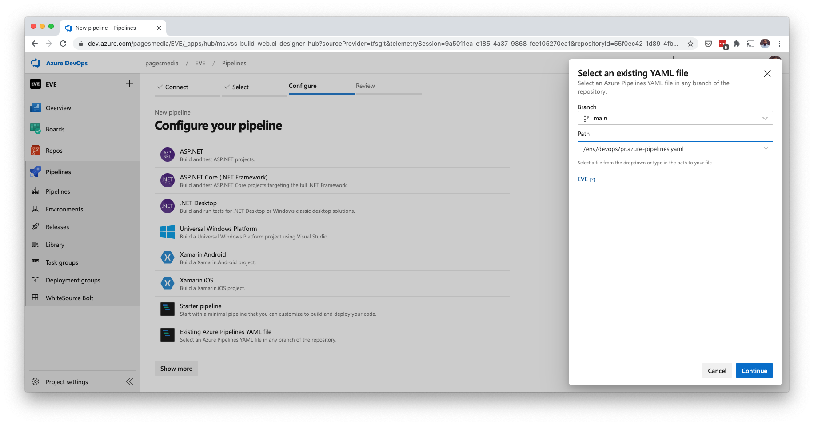
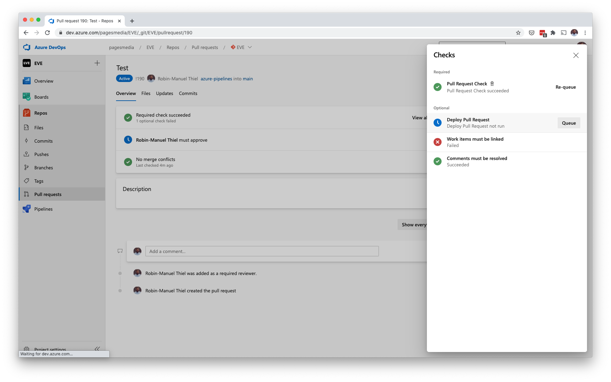

Deploy Pull Requests to Kubernetes for Review with Azure DevOps
When a Pull Request got created, you might want to try out the changes in a testing environment. Here is how to optionally deploy Azure DevOps Pull Requests to a dedicated Kubernetes namespace with a single click.
linkWhat we need
To achieve automatic deployments of Pull Requests in Azure DevOps, we need a few things beside the obvious ones like a Kubernetes Cluster and your application as a Container with a Helm Chart or deployment definition.
- Azure Pipeline to build the app and deploy it
- An optional Build Trigger to kick off the pipeline
linkCreate an Azure Pipeline for Build and Deploy
We will setup Azure DevOps, to offer running an additional Build Validation Branch Policy whenever a Pull Request to a specific branch got opened. These build validations come as Azure Pipelines.
1linkname: $(BuildID)
2linktrigger: none
3link
4linkvariables:
5link - name: AzureSubscription
6link value: 'EVE Azure Subscription (sponsored)'
7link - name: KubernetesConnection
8link value: 'EVE AKS (Dev)'
9link - name: ContainerRegistry
10link value: 'EVE ACR DEV (new)'
11link - name: KubernetesConnection
12link value: ''
13link - name: Tag
14link value: 'pr$(System.PullRequest.PullRequestId)-$(Build.BuildId)'
15link
16linkstages:
17link - stage: 'BuildPR'
18link jobs:
19link - job: Build
20link pool:
21link vmImage: 'Ubuntu-16.04'
22link steps:
23link - task: Docker@2
24link displayName: 'Build and push container image'
25link inputs:
26link containerRegistry: $(ContainerRegistry)
27link repository: 'test'
28link command: 'buildAndPush'
29link Dockerfile: 'src/Dockerfile'
30link buildContext: '.'
31link tags: |
32link $(Tag)
33link
34link - job: 'DeployPR'
35link displayName: 'Deploy Pull Request'
36link dependsOn: [Build]
37link variables:
38link - name: Namespace
39link value: 'myapp-pr$(System.PullRequest.PullRequestId)'
40link - name: ReleaseName
41link value: 'myapp-pr$(System.PullRequest.PullRequestId)'
42link
43link - task: Kubernetes@1
44link displayName: 'Create Namespace'
45link inputs:
46link connectionType: 'Kubernetes Service Connection'
47link kubernetesServiceEndpoint: $(KubernetesConnection)
48link command: 'apply'
49link useConfigurationFile: true
50link configurationType: 'inline'
51link inline: |
52link apiVersion: v1
53link kind: Namespace
54link metadata:
55link name: '$(Namespace)'
56link
57link - task: HelmInstaller@1
58link displayName: 'Install Helm'
59link inputs:
60link helmVersionToInstall: 'v3.1.0'
61link
62link - task: HelmDeploy@0
63link displayName: 'Install Helm chart'
64link inputs:
65link connectionType: 'Kubernetes Service Connection'
66link kubernetesServiceConnection: $(KubernetesConnection)
67link namespace: $(Namespace)
68link command: 'upgrade'
69link chartType: 'FilePath'
70link chartPath: 'env/helm/MyApp'
71link releaseName: $(ReleaseName)
72link overrideValues: "\
73link tag=$(Tag)"
Once the pipeline definition is written, we can create a new Azure Pipeline from it by checking the deploy-pr.azure-pipelines.yaml file in to our repository and creating a new Azure Pipeline in Azure DevOps by selecting an existing YAML file.

Now that the pipeline is created, we can add it to the optional steps that can be kicked off from a Pull Request check.
linkAdd the pipeline as a Pull Request Check
In the Branches section of the Repos submenu in Azure DevOps, we can add Policies to each branch by clicking the menu icon next to a branch and selecting the Branch policies option.
Here we can setup requirements for Pull Request that are being made against the selected branch. Beside policies for reviewers and status checks, we can also setup Build Validations, which are Azure Pipelines that run to validate the changes. Some of them can be required and run automatically, while others can be optional and only run on a user's request. The latter is exactly what we need.
Add a Build Validation policy for the Pull Request Pipeline we created earlier and declare its trigger to manual and its requirement to optional.

Now, if someone creates a new Pull Request targeting the branch you just setup the new policy for, the reviewer can chose to deploy the changes to a dedicated Kubernetes namespace for detailed review, just by kicking off the newly created pipeline.
Running the pipeline that builds and deploys the changes is a bit hidden. In the Pull Request view, click the View all checks button to see a list of all Build Validation pipelines that can be run for this Pull Request. Here you will find the optional one, that we just created. Once you click the Queue button, your pipeline will be executed.

linkOptional: Post a link to the app to the Pull Request comments
Personally, I like not just silently deploying a Pull Request but also posing an internal link for reviewing automatically to the Pull Request's comments. I use the Create Pull Request Comment Task from the Azure DevOps Marketplace for that but of course you need to make sure, that your Helm Chart is built in a way, that it creates a route in your Ingress Controller for the newly deployed testing version of your app.
linkGotchas
One thing that bothers me about that solution is the fact that I have to delete the deployment manually after merging the Pull Request. Currently, there is no Trigger in Azure DevOps to run a pipeline after merging. Fingers crossed, that Azure DevOps brings a native "Deploy Pull Requests to Kubernetes" feature one day, which includes that.